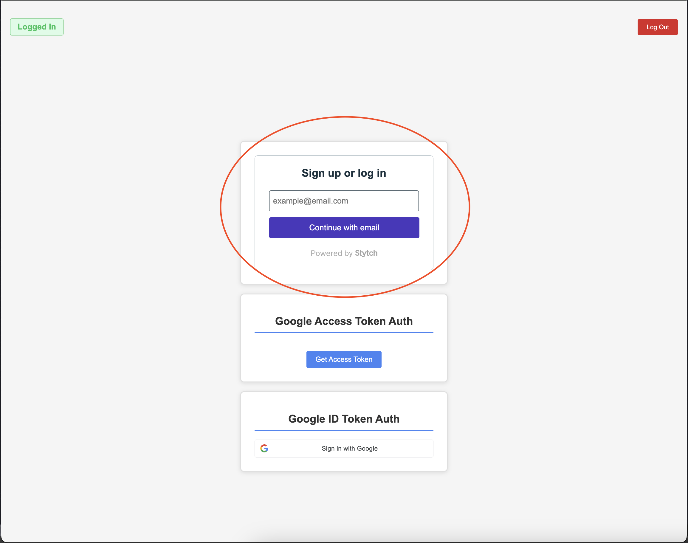

All About Auth
September 24, 2025
Authentication and authorization are two critical parts of any software which has the notion of a "user". Authentication allows a user to prove that they are who they say they are, and authorization gives an entity access to protected resources. The combination of these two principals allows for complex and robust user management, and has resulted in a plethora of protocols, frameworks, and jargon to go along with it. I have created a small application which demonstrates core auth principles, and will be referencing it throughout the article.
OAuth
OAuth is an authorization framework used to grant access to resources on behalf of a user. It is not concerned with who is making the request for information, but only if that request should be allowed or not. Here are some important terms that OAuth defines.- Client
- The server requesting protected resources.
- Resource Server
- The server which contains protected resources.
- Authorization Server
- The server which clients interact with to authenticate users. The server issues access tokens, refresh tokens, etc.
- Access Token
- A string which is sent with requests to a resource server. The resource server uses the access token to determine whether or not the request is permitted.
- Refresh Token
- A string which is used to obtain a new access token when the current one expires.
- Opaque Tokens
- Access tokens which are not decipherable by the client application. They only "mean" something to the server.
- JWT
- A token format which is decipherable by the client application. The client application is able to view what access is defined for the provided token. A JWT is also signed, and not encrypted in any way. The signature helps the resource server verify that the token has not been tampered with in or before transit.
- Scopes
- A description of what resources the access token gives the client access to.
In general, the OAuth flow is initiated when an application needs access to a user's resources stored by a third party. The client application redirects the user to the authorization server's sign-in page, where the user enters their credentials. During the sign-in process, the user is asked to accept a list of scopes that the client application has defined. After the user successfully logs in and accepts these scopes, they are redirected back to the client application.
Local vs Provided Access Tokens
A provided access token is an access token which is provided to an application from a third party authorization server such as Google, Okta, etc. A local access token is one issued by a server controlled by the first party developers. Provided access tokens are useful for reaching out to third party resource servers to fetch user data, while local access tokens can be used to protect a backend server which serves content from a database that the first-party developers own.Provided Access Tokens
The following is a concrete example of an OAuth flow implemented with a simple express server and Google's auth server. First, the action is kicked off when the user clicks on the "Get Access Token" button. It sends a request to an endpoint hosted via express, which executes the following code.
export function redirect_to_google_acess_token_auth(req:Request, res:Response) {
const oauth2Client = new google.auth.OAuth2({
clientId: process.env.CLIENT_ID ?? '',
clientSecret: process.env.CLIENT_SECRET ?? '',
redirectUri: 'http://localhost:3000/login/access/google'
}
);
const scopes = [
'https://www.googleapis.com/auth/blogger',
'https://www.googleapis.com/auth/calendar',
'https://www.googleapis.com/auth/userinfo.email',
'https://www.googleapis.com/auth/userinfo.profile'
];
const url = oauth2Client.generateAuthUrl({
access_type: 'offline',
scope: scopes
});
res.redirect(url)
}
Firstly, the code initializes the google OAuth2 client library for node. We provide the client a clientId and secret, which can be found in the Google dashboard after creating a project. Additionally supplied to the OAuth2 client is a redirect URI. This the endpoint that Google will redirect to after the end user finishes the authorization process. Also defined are scopes that our application is requesting access to. During the auth process, a popup will appear and ask the user to confirm the application can have access to said resources. Finally, the OAuth2 library is used to generate the url to the auth server login form, and express redirects the browser there. Once the user is redirected, they are greeted with a normal Google login screen.
 After entering their credentials, they are asked to accept the scopes
After entering their credentials, they are asked to accept the scopes
 Clicking on the "5 Services" button reveals the specific scopes that are defined when generating the redirect url
Clicking on the "5 Services" button reveals the specific scopes that are defined when generating the redirect url
 After the user accepts the scopes, Google redirects the browser to the provided redirect URI, which is hosting an HTTP endpoing. Google sends an authorization code, which the backend parses from the query parameters and exchanges for an access token.
After the user accepts the scopes, Google redirects the browser to the provided redirect URI, which is hosting an HTTP endpoing. Google sends an authorization code, which the backend parses from the query parameters and exchanges for an access token.
export async function auth_access_token(req: Request, res: Response) {
const code = req.query.code as string
const oauth2Client = new google.auth.OAuth2({
clientId: process.env.CLIENT_ID ?? '',
clientSecret: process.env.CLIENT_SECRET ?? '',
redirectUri: 'http://localhost:3000/login/access/google'
}
);
try {
const { tokens } = await oauth2Client.getToken(code)
const accessToken = tokens.access_token
const refreshToken = tokens.refresh_token
const expiresIn = tokens.expiry_date ?? Date.now() + 60 * 60
res.cookie('access_token', token)
res.cookie('refresh_token', token)
res.redirect('http://localhost:3001')
} catch (e) {
if (e instanceof Error) {
res.status(400).send(e.message)
} else {
res.status(500).send('Something went wrong')
}
}
}
After recieving the access and refresh tokens, they can be set as cookies for the frontend to store. The user is yet again redirected, this time back to the frontend.
It can be seen that indicator in the top left has now changed to show a logged in status. To achieve this, the code simply verifies the existance of the access token and refresh tokens in the cookies.
 The flow demonstrated is defined as the "Authorization Code Flow", and is the most common amongst web applications. In reality, the code is a slight modification of what
is actually in the repository, as the real code implements a local access token pattern.
The flow demonstrated is defined as the "Authorization Code Flow", and is the most common amongst web applications. In reality, the code is a slight modification of what
is actually in the repository, as the real code implements a local access token pattern.
Local Access Tokens
Often times, the resource server which the frontend application will be requesting data from is actually in-house. Additionally, it is extremely common for applications to have a local notion of a user, with specific roles and permissions which do not make sense outside of that application's context. The implementation of this often manifests in the form of permissions and roles stored in a database, associated with some sort of user object. When this is the case, this information is required to figure out if the client requesting data from the resource server is permitted to access the resource. During the auth flow, this information must be encapsulated in the access token so that the in-house resource server can determine access rights. The token that results from the encapsulation this data is known as a local access token. Generally speaking, after an access token is retrieved from a third party such as Google, it is used to find metadata about the user such as their email, name, etc. Additionally, data about the sepcific user is looked up in an internal database. Both the third party and local data about the user is wrapped up in a JWT and signed with an internal private key, and returned to the frontend. On requests to an internal resource server, this JWT is provided and verified with the same key used for signing. The JWT is the local access token.
It is still useful to have users log in via a third party auth server initially such as Google,
to keep password management, verification, and other complexities to a proven system. Also, users will typically have metadata already with these providers,
so there is no need to have them duplicate information inside of whatever application is being developed.
Within the same application, the implementation has been extended to include the creation of a local access token by wrapping the provided Google access token
with a customized JWT, containing application specific information such user roles. Before looking at the JWT creation,
it is important to understand the specifics about what application-specific information is, and how it might be stored.
In order to keep track of user roles, this application has a very simple model. There are two entities, the User entity and the Role entity
@Entity()
export class User {
@Column({primary: true})
email: string
@ManyToMany(() => Role, {cascade: true})
@JoinTable()
roles: Role[]
}
@Entity()
export class Role {
constructor(type: ROLE_TYPE) {
this.type = type
}
@PrimaryGeneratedColumn()
id: number
@Column({type: 'enum', enum: ROLE_TYPE, default: ROLE_TYPE.viewer, unique: true})
type: ROLE_TYPE
}
The user only has a simple email field. The roles have a primary key, along with a type. Typeorm generates a join table automatically when using the ManyToMany decorator.
In the database, there exists both an admin and a manager role, with a singular user who contains both roles
 For simplicity, there is only one user in the database. Users are created whenever someone signs in with google via the following code
For simplicity, there is only one user in the database. Users are created whenever someone signs in with google via the following code
export async function auth_access_token(req: Request, res: Response) {
const code = req.query.code as string
const oauth2Client = new google.auth.OAuth2({
clientId: process.env.CLIENT_ID ?? '',
clientSecret: process.env.CLIENT_SECRET ?? '',
redirectUri: 'http://localhost:3000/login/access/google'
}
);
try {
const { tokens } = await oauth2Client.getToken(code)
const accessToken = tokens.access_token
const refreshToken = tokens.refresh_token
const expiresIn = tokens.expiry_date ?? Date.now() + 60 * 60
const response = await fetch( `https://www.googleapis.com/oauth2/v2/userinfo?access_token=${accessToken}`)
const json = await response.json() as UserInfo
const email = json.email
const userRepository = dataSource.getRepository(User)
let user = await userRepository.findOne({ where: {email}, relations: ['roles']})
if (!user) {
user = await userRepository.save({email})
}
... more code to come ...
}
Here, the Google access token is used to fetch the user's info from Google's resource server, which contains the user email. Then, the user is looked-up in the local database via said email. If the user does exist, the auth flow continues as normal. If not, then a user is inserted into the database with the given email.
This is all done via typeorm's repository API.
 Here are two roles which have been created and are assignable to users, along with
the join table created by typeorm automatically after defining the many to many relationship.
The join table contains the assignment of roles to users. Now that the schema and data has been explained,
we can take a look at the code which extracts role information from the database.
Here are two roles which have been created and are assignable to users, along with
the join table created by typeorm automatically after defining the many to many relationship.
The join table contains the assignment of roles to users. Now that the schema and data has been explained,
we can take a look at the code which extracts role information from the database.
... more code to come ...
user.roles = user.roles ?? []
const roles = user.roles.map(role => role.type)
const jwtPayload: JWTPayload = {
...json,
sub: '',
iss: 'Test App',
aud: 'Test App',
roles: roles,
accessToken: accessToken ?? undefined,
refreshToken: refreshToken ?? undefined,
authProvider: AUTH_PROVIDER.google,
}
const token = jwt.sign(jwtPayload, process.env.JWT_SECRET ?? '')
res.cookie('jwt', token, {maxAge: expiresIn}).redirect('http://localhost:3001')
} catch (e) {
if (e instanceof Error) {
res.status(400).send(e.message)
} else {
res.status(500).send('Something went wrong')
}
}
}
in this code, the user roles are fetched after retriving the user from the database, or creating the user. In the case where the user is newly created or has no roles assigned,
the roles would be empty array.
In this example, the user has both the admin and manager roles assigned. These are fetched these from the database,
and then inserted into the "roles" field of our JWT. Additionally, a couple of other things are added to the JWT payload. All of the information retrieved
from the userinfo query to Google, the access and refresh tokens for Google, and some metadata of the token issuer.
The JWT is then created and signed with an internal private key, and afterwards is added to the set-cookie response header. The user is then redirected back to the frontend.
On subsequent reqeusts to the resource server,
the browser automatically sends the JWT. The signature can be verified with the application's secret key to ensure it has not been tampered
with, and the user roles can be analyzed to see if the requestor has access to the resource.
This is what the cookie looks like after it is set in the browser
This is what the actual payload contained in the JWT looks like. Here, the "roles" field is visible, and accurately portrays the user roles stored in the database
IDPs
An IDP, also known as an identity provider, is a service that helps to create and store users and associated information, along with providing management tools and authentication processes. By utilizing an IDP, applications do not have to worry about a lot of the overhead that comes with managing all aspects of users, and can instead only focus on small aspects specific to the application itself. Stytch is one of many available IDPs, and I will be using it as an example to demonstrate the capabilities that come OOTB with many providers. In the same project, I have created a Stytch authentication flow which allows users to log in or sign up with their email. After doing so, Stytch will send a one time link to their email to access the application. In order to achieve this, the first step is to utilize the OOTB Stytch UI components that come included with the javascript library. To register the UI component, the code looks like so
import { StytchUIClient } from "https://www.unpkg.com/@stytch/vanilla-js@2.0/dist/index.esm.js";
import { Products } from 'https://www.unpkg.com/@stytch/vanilla-js@0.9.5/dist/index.esm.js';
export const stytch = new StytchUIClient('public-token-test-3d5ee7dd-f46e-4831-9b87-ad30dd8d39b0');
const REDIRECT_URL = 'http://localhost:3000/login/stytch';
const config = {
products: [Products.emailMagicLinks],
emailMagicLinksOptions: {
loginRedirectURL: REDIRECT_URL,
loginExpirationMinutes: 60,
signupRedirectURL: REDIRECT_URL,
signupExpirationMinutes: 60,
},
};
const styles = {
container: {
width: '100%',
},
buttons: {
primary: {
backgroundColor: '#4A37BE',
borderColor: '#4A37BE',
},
},
};
const callbacks = {
onEvent: (message) => console.log(message),
onError: (error) => console.log(error),
};
stytch.mountLogin({
elementId: '#stytch-sdk',
styles,
config,
callbacks,
});
To use this component, all that is required is importing the script into the index.html file, and including a component with an "id"=stytch-sdk. Important to note is the REDIRECT_URL, which is where the user is redirected to after clicking the link they receive in the email. In reality, there should be to auth endpoints in the auth server, one specifically for
logging in, and another for signing up. After the component is rendered, it looks like so

After entering an email, Stytch offers to automatically bring the user to their email provider, so that they can easily access the log in link
 Finally, the user receives the email, which redirects the browser to our specified redirect URL
Finally, the user receives the email, which redirects the browser to our specified redirect URL
 The code which handles the redirect is locacted in our backend application, and looks like so
The code which handles the redirect is locacted in our backend application, and looks like so
export async function stytchAuth(req: Request, res: Response) {
const token = req.query.token as string
const client = new stytch.Client({
project_id: process.env.STYTCH_ID ?? '',
secret: process.env.STYTCH_SECRET ?? ''
});
const params = {
token,
session_duration_minutes: 60,
};
try {
const response = await client.magicLinks.authenticate(params)
const jwt = response.session_jwt
const content = await client.sessions.authenticateJwtLocal({session_jwt: jwt})
const userResponse = await client.users.get({user_id: content.user_id})
const email = userResponse.emails[0]?.email as string
const userRepository = dataSource.getRepository(User)
let user = await userRepository.findOne({ where: {email}, relations: ['roles']})
if (!user) {
user = await userRepository.save({email})
}
userResponse.roles = userResponse.roles ?? []
const roles = user.roles.map(role => role.type)
const ourjwt: JWTPayload = {
...content,
aud: 'Test Auth',
iss: 'Test Auth',
sub: content.user_id,
roles,
authProvider: AUTH_PROVIDER.stytch,
accessToken: undefined,
refreshToken: undefined
}
res.cookie('jwt', ourjwt, {maxAge: Date.now() + 60 * 60}).redirect('http://localhost:3001')
} catch (error) {
if (error instanceof Error) {
res.status(400).send(error.message)
} else {
res.status(500).send('Something went wrong')
}
}
}
To start, the endpoint expects a token which can be authenticated via the Stytch library's authenticate method. This is exchanged for an object which contains metadata about the
user, along with session tokens provided by Stytch. These tokens act as access tokens to the Stytch resource server,
and can be used to retrieve all sorts of user information. After authenticating the JWT, the code proceeds as normal, either creating or looking up the user in the local database,
and wrapping the roles and other user metadata in the JWT. It is signed the same, and set in the same cookie as seen previously. After this, the user is once again redirected to the frontend application
Authentication
Authentication is the process of a user proving that they are who they say they are. While authorization only cares that the requestor has access to the resource, authentication involves a user entering credentials to verify themselves.OIDC
OIDC is an authentication layer that is built ontop of the OAuth 2.0 Authorization framework. Rather than recieving an access token, after completing the OIDC flow applications recieve an ID Token, which often times is in the form of a JWT. This JWT has user information, and indicates that the user has successfully logged in and proven their identity. There are a couple of different way to obtain an ID Token from an auth server, but in in this application I have integrated with Google's auth server in order to retrieve an ID Token directly after the user authenticates. In order to start, first the google UI component is registered for users to log in with. The component looks like so. You can see that after the user authenticates, they will be redirected to our login endpoint in the backendTypically, an ID token is not meant to be sent to a resource server. They are only meant to be used by the client to verify the
authentication status of the user
<div class="auth-container">
<h1 class="auth-title">Google ID Token Auth</h1>
<div class="signin-wrapper">
<div id="g_id_onload"
data-client_id="redacted :)"
data-login_uri="http://localhost:3000/login/id/google"
data-auto_prompt="false">
</div>
<div class="g_id_signin"
data-type="standard"
data-size="large"
data-theme="outline"
data-text="sign_in_with"
data-shape="rectangular"
data-logo_alignment="left">
</div>
</div>
</div>
And the UI component itself looks like so
After clicking on the button to sign in with Google, the user is asked to select an account
 Notice with this flow, there is no mention of scopes. This is because the token that is provided to our backend endpoint upon redirection is not an access token. Therefore, no scopes
are required as the token only contains data about who the user is, and does not grant the application with access to any other information. This user information can be used to create, yet again, a local access token
Notice with this flow, there is no mention of scopes. This is because the token that is provided to our backend endpoint upon redirection is not an access token. Therefore, no scopes
are required as the token only contains data about who the user is, and does not grant the application with access to any other information. This user information can be used to create, yet again, a local access token
export async function auth_id_token(req: Request, res: Response) {
const IdToken = req.body.credential as string
const csrfToken = req.body.g_csrf_token as string
const csrfCookie = req.cookies.g_csrf_token as string
if (csrfToken !== csrfCookie) {
res.status(401).send('Nice try')
}
const client = new OAuth2Client();
const ticket = await client.verifyIdToken({
idToken: IdToken,
audience: process.env.CLIENT_ID as string,
});
const payload = ticket.getPayload();
try {
const email = payload?.email as string
const userRepository = dataSource.getRepository(User)
let user = await userRepository.findOne({ where: {email}, relations: ['roles']})
if (!user) {
user = await userRepository.save({email})
}
user.roles = user.roles ?? []
const roles = user.roles.map(role => role.type)
const jwtPayload: JWTPayload = {
...payload,
sub: email,
iss: 'Test App',
aud: 'Test App',
roles: roles,
accessToken: undefined,
refreshToken: undefined,
authProvider: AUTH_PROVIDER.google,
}
const token = jwt.sign(jwtPayload, process.env.JWT_SECRET ?? '')
res.cookie('jwt', token, {maxAge: Date.now() + 60 * 60}).redirect('http://localhost:3001')
} catch (error) {
if (error instanceof Error) {
res.status(400).send(error.message)
} else {
res.status(500).send('Something went wrong')
}
}
}
The code in the beginning is a bit different, as this time we must first verify the csrf token sent to us in the body of the request matches the cookie set by Google.
If these two match, the process can continue. After this, the Id token is verified using the Google library. Upon successful verification, the user email is extracted from the payload, and then it is business as usual. Inserting or finding our user, and creating a JWT from the information.
SSO
SSO is a way to allow a user to sign in once, and afterwards access an entire suite of applications without signing in again. With SSO, there is one more key term that is useful to understand- Service Proivder
- The owner of the service which a user is attempting to access, typically via SSO
SSO can be implemented in many ways, although two of the most popular flows are IDP initiated SSO and service provider inititated SSO. With IDP initiated SSO, the IDP reaches out to the service provider, and supplies proof of identity for a user. The service provider then attempts to verify the proof, and can either allow or deny access to the service. If accepted, the user can either be redirected to the service the service provider offers directly, or a link can be generated that sends client credentials to the service provider when clicked, allowing access at a later point. Service provider initiated SSO is similar, although is kicked off when a user attempts to navigate to a service without yet being authenticated. The service provider redirects the user to the IDP, where they then can sign in. After this,the IDP once again communicates directly with the service provider. The IDP sends proof of authentication, and if the service provider accepts, the user is redirected to the service, and a session is initiated. There are two major ways that IDPs can provide the proof of authentication. One of these, which is an enterprise standard, is called SAML. After authentication, a SAML assertion is created and sent to the service provider in a SAML response, along with some other data. The service provider can parse the SAML response, and validate a user to begin a session. SAML assertions and other parts of the protocl are written in XML, making it a bit difficult to read. Another, newer format, is one that has already been mentioned: OIDC. With OIDC, the flow is extremely similar, although rather than XML, information written with JSON.
Service Provider Initiated SSO Example
I have implemented a service-provider initialted SSO flow between a service-provider called grafana and an IDP called keycloak. Both of these services are running in docker, and most of the setup is simple configuration. Here is the docker container that spins up the IDP and service
services:
postgres:
image: postgres:15
container_name: postgres_db
restart: unless-stopped
environment:
POSTGRES_USER: ${POSTGRES_USER}
POSTGRES_PASSWORD: ${POSTGRES_PASSWORD}
POSTGRES_DB: ${POSTGRES_DB:-myapp_db}
ports:
- "${POSTGRES_PORT}:5432"
volumes:
- postgres_data:/var/lib/postgresql/data
keycloak:
image: quay.io/keycloak/keycloak:26.3.4
container_name: keycloak
command: start-dev
environment:
KC_BOOTSTRAP_ADMIN_USERNAME: admin
KC_BOOTSTRAP_ADMIN_PASSWORD: admin
ports:
- "8080:8080"
grafana:
image: grafana/grafana:latest
container_name: grafana
ports:
- "3002:3002"
volumes:
- grafana-data:/var/lib/grafana
- ./grafana.ini:/etc/grafana/grafana.ini
environment:
- GF_SECURITY_ADMIN_PASSWORD=admin123
restart: unless-stopped
volumes:
postgres_data:
driver: local
grafana-data:
In order to setup the integration, there are a couple of things that first have to be done. Firstly, a client application has to be set up so that keycloak knows to accept incomming
requests from grafana. Here, we specify where our application is running, what type of authentication flow we are using, and where we should redirect to after the auth in keycloak
is complete
 Then, we need to write to the grafana.ini configuration file to specify where we have keycloak running, so that graphana can redirect users to log into the app via keycloak
Then, we need to write to the grafana.ini configuration file to specify where we have keycloak running, so that graphana can redirect users to log into the app via keycloak
[auth.generic_oauth] enabled = true name = Keycloak allow_sign_up = true client_id = grafana client_secret = redacted :) scopes = openid email profile offline_access roles auth_url = http://localhost:8080/realms/master/protocol/openid-connect/auth token_url = http://host.docker.internal:8080/realms/master/protocol/openid-connect/token api_url = http://host.docker.internal:8080/realms/master/protocol/openid-connect/userinfo email_attribute_path = email login_attribute_path = username name_attribute_path = full_name role_attribute_path = contains(roles[*], 'admin') && 'Admin' || contains(roles[*], 'editor') && 'Editor' || 'Viewer'Here, we specify some oauth settings such as the scopes we want grafana to be able to have acess to, some of which are required to fetch user info. Additionally we haev to specify the urls which keycloak serves oauth endpoints at, so that grafana and keycloak can communicate seamlessly. With this all in place, the setup is complete. The user first nagivates to grafana and clicks on the "sign-in with keycloak button" Next, they are redirected to sign in with the IDP. After they enter their credentials, the IDP is going to send an OIDC token to grafana Finally, they are redirected back to grafana, which can validate the OIDC token and fetch user info via the api_url described in the graphana.ini, and start a session if the process succeeds Link to the GitHub repository